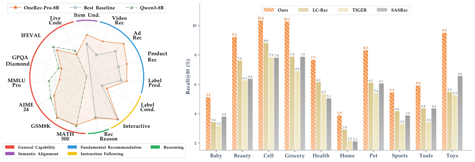
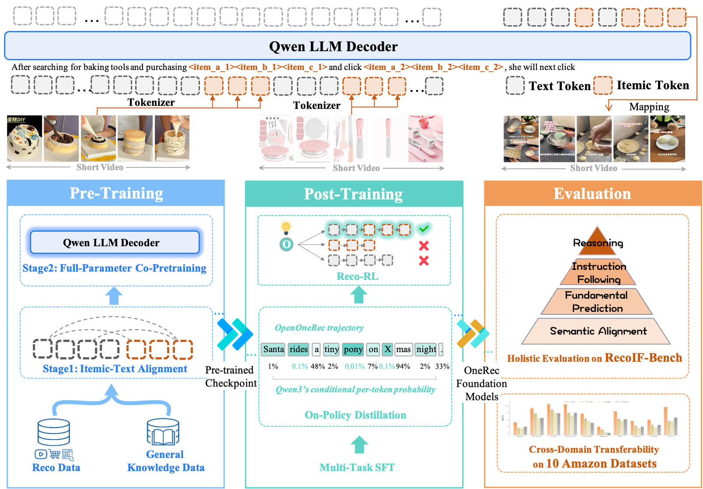
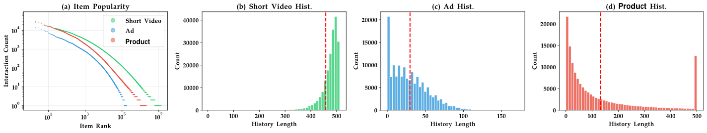
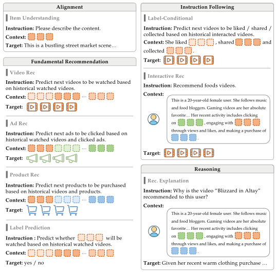
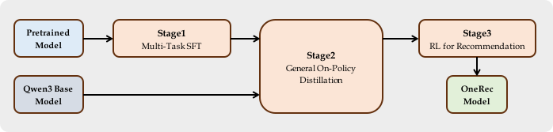
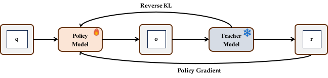
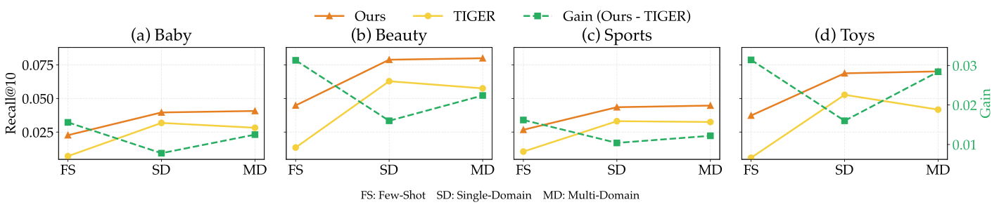

OpenOneRec 技术报告
一个用于加速生成式推荐的开源基础模型与基准
![[Uncaptioned image]](assets/6425d991300d22da.png)
摘要
尽管 OneRec 系列已成功将碎片化的推荐流水线统一为端到端生成式框架，但推荐系统与通用智能之间仍存在显著差距。受限于孤立数据，现有模型难以利用驱动大语言模型（LLM）涌现能力的大规模数据扩展。因此，它们作为领域专家运行——擅长模式匹配，但缺乏世界知识、推理能力和指令遵循能力。这一问题还因缺乏评估此类集成能力的整体基准而进一步加剧。为解决这一问题，我们的贡献如下：1）RecIF-Bench 与开放数据：我们提出 RecIF-Bench，这是一个覆盖 8 个多样化任务的整体基准，全面评估从基础预测到复杂推理的能力。同时，我们发布了一个大规模训练数据集，包含 96 百万次交互，这些交互来自 160,000 名用户，以促进可复现研究。2）框架与扩展：为确保完全可复现性，我们开源了完整的训练流水线，涵盖数据处理、协同预训练和后训练。借助该框架，我们展示推荐能力可以可预测地扩展，同时缓解对通用知识的灾难性遗忘。3）OneRec-Foundation：我们发布 OneRec-Foundation（1.7B 和 8B），这是一个模型系列，在 RecIF-Bench 的所有任务上建立了新的最先进（SOTA）结果。此外，当迁移到 Amazon 基准时，我们的模型以平均 26.8% 的 Recall@10 提升，跨 10 个多样化数据集超越了最强基线（图 1）。 这项工作标志着向构建真正智能的推荐系统迈出了一步。然而，实现这一愿景仍面临重大技术和理论挑战，凸显了在这一有前景的方向上开展更广泛研究的必要性。

1 引言
大语言模型（LLM）的最新进展推动了向生成式推荐 (Geng et al., 2022; Wu et al., 2023) 的范式转变。值得注意的工作，如 OneRec 系列 (Deng et al., 2025; Zhou et al., 2025a, b)，已成功将多阶段推荐流水线统一为端到端生成式框架，展示了将用户历史视为下一物品预测上下文的潜力。尽管取得了这些结构性进展，当前推荐系统与通用智能之间仍存在显著鸿沟。现有生成式推荐器往往受限于孤立的数据孤岛，这切断了通用 LLM 中涌现能力所必需的数据扩展循环 (Kaplan et al., 2020; Hoffmann et al., 2022)。因此，这些系统作为领域特定专家运行，在协同模式匹配方面非常高效，但缺乏更广泛智能所必需的通用世界知识。
为弥合语义鸿沟，近期研究如 LC-Rec (Zheng et al., 2024) 和 OneRec-Think (Liu et al., 2025) 将离散推荐标识符与 LLM 的语言空间对齐。然而，这些方法通常局限于有限的下游任务集。这种任务同质性往往引发灾难性遗忘，从而损害骨干模型固有的泛化能力。此外，现有基准仍局限于狭窄的专业任务，无法评估推荐基础模型所必需的整体能力。在本工作中，我们提出一个统一框架（图 2），集成可扩展预训练、混合后训练和整体评估。我们引入 RecIF-Bench，据我们所知，这是首个旨在通过指令遵循评估跨多样化推荐场景多方面能力的评估套件。为促进可复现性，我们开源了完整训练流水线，包括数据处理、协同预训练和后训练协议，以及在千亿词元语料上训练的检查点。我们将主要贡献总结如下：
-
•
RecIF-Bench：一个综合性的推荐指令遵循基准。 我们发布 RecIF-Bench，这是一个多维基准，旨在严格评估跨越 8 个多样化任务的推荐能力，范围从基础推荐到复杂推理。它涵盖短视频、电子商务和在线广告，是量化指令遵循与推荐之间协同作用的稳健测试平台。此外，我们在 7 个广泛认可的通用基准（例如 MATH500、LiveCodeBench、GPQA-Diamond）上评估 OneRec-Foundation，以验证广泛推理和编码技能的保留情况。为促进可复现研究，我们还发布了一个综合训练数据集，包含 96 百万次交互，这些交互来自 160,000 名用户。
- •
-
•
OneRec-Foundation 模型系列。 我们发布 OneRec-Foundation 系列，包含参数规模为 1.7B 和 8B 的模型。基于 Qwen (Yang et al., 2025) 构建，OneRec-Foundation 超越了简单的微调，赋予骨干模型内在推荐能力。该系列包括在我们的开源数据集上训练的 Standard 版本，以及使用来自快手的千亿词元工业语料增强的 Pro 版本。实证结果显示，在所有 RecIF-Bench 任务上均达到 SOTA 性能。值得注意的是，在 10 个 Amazon 数据集上，我们的模型相较强基线取得 显著领先，并取得平均 26.8% 的提升，体现在 Recall@10 上，凸显了其作为基础模型的稳健性。

2 预备知识
在本节中，我们从生成式语言建模的视角重新构建推荐问题。我们引入一种模态对齐的物品词元化策略，并将推荐任务表述为标准自回归生成问题。
2.1 物品即词元：弥合模态鸿沟
将 LLM 应用于推荐的一个根本挑战在于连续语言空间与离散物品空间之间的不匹配。用详细文本描述表示物品效率低下，因为用户历史上下文过长 (Yang et al., 2024)，且无法保证生成语料内物品 (Zheng et al., 2024)。为解决这一问题，我们将物品视为一种独特模态，采用 Itemic Tokens (Zhou et al., 2025a; Luo et al., 2025)（见图 2 中的分词器）。
我们采用 RQ-Kmeans (Luo et al., 2025) 将物品元数据的预训练语义嵌入离散化为分层离散码。这将物品语义压缩为短的固定长度序列，在保留协同结构的同时实现高效长上下文建模。关键在于，这些词元的分层特性确保语义相似的物品共享公共前缀，使模型能够基于词元邻近性迁移知识——类似于自然语言词元中编码语义关系的方式。
2.2 推荐作为自回归建模
在物品模态与词元空间对齐后，我们统一了词表 。这使我们能够将用户的交互历史视为一个 长上下文序列，其中包含物品词元，并可选地与文本交错，而不是一种专门的数据结构。
我们将从预测（例如，召回）到推理（例如，解释）的任务表述为统一的 下一词元预测问题。形式上，给定指令 和用户上下文 （包含交互历史和可选查询），模型最大化目标响应 的似然：
| (1) |
其中 可以是目标物品的词元序列（用于推荐任务）或自然语言序列（例如，物品元数据、用户画像或推理）。这一表述使我们能够利用标准 Transformer 架构和 LLM 训练基础设施，而无需任何任务特定的架构修改。
3 RecIF-Bench：一个整体推荐指令遵循基准
推荐系统从专业专家向通用基础模型的演进，要求评估范式发生转变。传统基准通常局限于单一领域内的闭集排序准确率，无法评估大语言模型（LLM）的更广泛能力。为弥合这一差距，我们引入 RecIF-Bench，一个旨在严格评估推荐基础模型的综合基准。
3.1 数据集构建
基础推荐模型的先决条件是包含多样化交互模式和丰富语义的数据基底。RecIF-Bench 聚合了约 120M 次交互，这些交互来自 200K 个不同用户，跨越三个异构工业领域。详细统计见表 1，数据分布可视化见图 3。
| Domain | # Users | # Items | # Interactions | Avg. Hist. Item | Avg. Tgt. Item |
| Short Video | 195,026 | 13,107,675 | 94,443,611 | 458.1 | 8.6 |
| Ad | 151,259 | 177,548 | 5,341,911 | 29.9 | 5.5 |
| Product | 144,307 | 2,055,240 | 20,087,210 | 132.5 | 6.7 |
| Total | 202,359 | 15,340,463 | 119,872,732 | 574.9 | 17.5 |
多领域覆盖。
该基准跨越三个不同领域，每个领域捕捉不同的用户行为模式：
-
•
短视频（内容领域）：来自快手的短视频，覆盖各种 APP 标签页中的观看行为。我们提供 曝光序列以及每次曝光对应的交互类型。
-
•
广告（商业领域）：快手上由广告主赞助的推广短视频，通常包含可点击的跳转链接。我们提供记录用户广告点击行为的 点击序列。
-
•
商品（电子商务领域）：快手商城中上架的商品。我们提供记录用户商品点击行为的 点击序列。

丰富元数据。
除交互日志外，RecIF-Bench 还提供跨三个维度的综合元数据：
-
•
用户侧：每个用户由 用户画像表示——这是一个将自然语言描述与 itemic 词元交错的统一叙述。该画像将人口统计信息（性别、年龄）、内容创作历史、近期搜索、关注的创作者类型、观看偏好、评论、直播观看、购买记录、购物车物品、本地服务优惠券、广告曝光和商业意图信号编织在一起。
-
•
物品侧：每个物品都关联有多模态嵌入（4096维文本嵌入，以及5帧视觉嵌入，每帧为1152维）。此外，我们为约13M个视频提供了稠密描述。
-
•
交互侧：对于曝光序列中的每个用户-视频对，我们记录多标签行为信号，包括点赞、关注、评论、有效观看和不感兴趣。
物品化分词（Itemic Tokenization）。
为使这些数据集与第2.1节所定义的生成式范式对齐，我们对数据集中的所有物品应用分层量化策略。因此，RecIF-Bench 中的每个物品都会被预先分词为一个离散词元元组，从而无需进一步预处理即可被基于 LLM 的推荐器直接使用。虽然我们出于便利提供了这些预先计算好的物品化词元，但其使用并非强制。研究人员也可以选择：（1）利用所提供的多模态嵌入，训练针对其特定需求定制的物品化分词器；或（2）采用传统物品 ID 以适配传统推荐方法。这种灵活性确保 RecIF-Bench 能够兼容多样的方法论范式，同时保持一致的评估框架。
数据划分策略。
我们采用严格的基于用户的划分策略来评估泛化能力。从200,000个用户的池中，我们随机选择20%作为留出的测试集。这些用户及其交互被完全排除在训练阶段之外，确保测试用户数据零泄漏到训练语料中。对于每个用户，我们进一步按时间划分其交互序列：指定时间戳之前的交互构成历史 ，而其后的交互则作为用于评估的目标 。
3.2 任务分类体系：从对齐到推理
RecIF-Bench 将8个不同任务组织为四层能力层级。该分类体系使我们能够精确指出模型能力处于从传统推荐器到智能体的谱系中的哪个位置。表2给出了这些任务的形式化总结。
任务形式化。
遵循第2.2节中的统一形式化，我们将每个任务实例化为一个序列到序列问题。输入样本形式化为，其中是任务特定指令，表示个性化用户上下文。根据任务不同，可以采取不同形式：（1）表示用户序列行为的交互历史，或（2）用户画像，即一种将自然语言描述与物品化词元交错编排的统一叙述。目标可以是下一个物品 ID、一个 ID 序列，或自然语言解释。

| Layer | Task | Input () | Target () | Metric | ||
| L0: Alignment | Item Understanding | Item | Item Description | LLM-as-Judge | ||
|
Short Video Rec | History | Next item | Pass@1/32, Recall@32 | ||
| Ad Rec | Next item | Pass@1/32, Recall@32 | ||||
| Product Rec | Next item | Pass@1/32, Recall@32 | ||||
| Label Pred. | + Item | Binary (Yes/No) | AUC | |||
|
Interactive Rec | Portrait + Query | Item user engages with | Pass@1/32, Recall@32 | ||
| Label-Cond. Rec | + Action | Item with action | Pass@1/32, Recall@32 | |||
| L3: Reasoning | Rec. Explanation | + + Item | Explanation | LLM-as-Judge |
3.2.1 第0层：语义对齐
这一基础层验证模型是否已成功弥合物品化词元与自然语言之间的模态鸿沟——这是所有下游任务的先决条件。
-
•
物品理解。 给定一个物品，模型生成其文本元数据（例如标题、描述）。这种逆向映射检验模型是否将物品化词元与语言词元对齐。
3.2.2 第1层：基础推荐
该层评估模型在多个领域中捕获用户偏好并预测物品效用的核心能力。
-
•
短视频推荐。 给定用户的视频观看历史，模型预测用户接下来将交互的视频。这一单领域任务作为标准的下一物品预测基准。
-
•
广告/商品推荐（跨领域）。 除单领域建模外，我们探索利用跨领域数据以实现更全面的用户理解的潜力。通过整合用户丰富的内容观看历史（）与商业行为（或），模型能够捕获更整体的用户兴趣视图。给定和（或），模型预测下一个广告（或商品）。这检验了模型在跨领域兴趣迁移和整体用户建模方面的能力。
-
•
标签预测。 给定用户历史和候选物品，模型以二元是/否响应来预测用户是否会参与（例如有效观看）。这种逐点估计对生成式推荐形成补充。
3.2.3 第2层：指令遵循
该层评估模型能否根据显式的自然语言指令调整其预测，这是基于 LLM 的推荐器的关键区分特征。
-
•
交互式推荐。 给定用户画像和表达即时意图（例如“一些放松的内容”）的自然语言查询，模型预测用户在发出该查询后会积极互动（例如点击、点赞或收藏）的物品。
-
•
标签条件推荐。 给定用户历史和目标行为标签（例如点赞、分享），模型预测用户在该特定行为下会互动的物品，检验细粒度行为建模能力。
3.2.4 第3层：推理
该层级体系的顶点检验模型综合信息并以自然语言阐述其理解的能力。
-
•
推荐解释。 给定用户画像、交互历史和推荐物品，模型生成自然语言论证，解释该物品为何与用户画像匹配。这检验模型对用户-物品兼容性进行推理的能力。
L3 的真值：由于推理任务缺乏自然的真值，我们使用可访问完整元数据的 Gemini-2.5-Pro 来生成高质量的参考输出。
3.3 评估协议
我们采用双指标评估体系，以同时覆盖推荐准确性和生成质量。
推荐指标。
对于推荐任务（第1层和第2层），我们使用Pass@1、Pass@32和Recall@32。Pass@K 衡量真值物品是否出现在前 K 个生成候选中；Recall@K 衡量检索到的相关物品所占比例。
文本生成指标。
对于文本生成任务（第0层和第3层），我们采用LLM-as-Judge，提示一个独立的 LLM 从准确性、连贯性等维度对生成文本进行评分。详情见附录B.1。
3.4 与现有基准的比较
评估用于推荐的基础模型，需要考察超越传统协同过滤的能力。我们识别出三个关键维度： （1）数据复杂性：处理多模态内容、跨领域迁移、长交互序列和多样用户行为； （2）任务泛化：在统一框架内执行多个推荐任务； （3）指令遵循与推理：处理交错输入（文本与物品化词元）并生成可解释的推荐。
现有基准仅部分地涉及这些维度。如表3所示，PixelRec 和 NineRec 关注多模态特征，但缺乏多任务和推理能力。KuaiSAR 支持多任务和多行为设置，但忽略了多模态和跨领域场景。关键的是，现有基准均未评估交错数据处理或推荐解释——而这两项能力对于指令微调的基础模型至关重要。RecIF-Bench 是首个覆盖全部七个维度的基准，为下一代推荐基础模型提供了全面的测试平台。
| Benchmark |
|
|
|
|
|
|
|
|||||||
| PixelRec | ✓ | ✓ | ||||||||||||
| KuaiSAR | ✓ | ✓ | ✓ | |||||||||||
| NineRec | ✓ | ✓ | ||||||||||||
| Yelp | ✓ | |||||||||||||
| Amazon | ✓ | ✓ | ||||||||||||
| RecIF-Bench | ✓ | ✓ | ✓ | ✓ | ✓ | ✓ | ✓ |
3.5 健全性检查：通用智能
为评估以推荐为中心的模型是否保留通用智能能力，我们纳入一套健全性检查套件，涵盖四个类别： （1）数学与文本推理：MATH-500、GSM8K 和 AIME’24； （2）通用任务：MMLU-Pro 和 GPQA-Diamond； （3）对齐：IFEVAL（严格提示）； （4）编码：LiveCodeBench v5。 一个成功的基础模型应当在掌握推荐任务的同时，在这些基准上保持有竞争力的表现。
4 预训练
在本节中，我们详述预训练数据的构建，随后介绍具体的训练策略以及对推荐中缩放规律的实证分析。
4.1 预训练数据
4.1.1 推荐语料
我们从快手内部的匿名用户日志中获取推荐数据，包括3.1中详述的用户侧、物品侧和交互侧原始元数据。为弥合离散 ID 与自然语言之间的模态鸿沟，我们首先利用 Qwen3-8B-Embedding (Zhang et al., 2025)从视频文本描述中提取语义嵌入（我们也提供多模态嵌入以促进未来研究）。随后，这些嵌入通过 RQ-Kmeans (Luo et al., 2025)被量化为分层物品词元。 具体而言，我们采用三层量化方案，每层码本大小为8192。因此，每个物品被映射为分层编码元组，随后被展平为由特殊词元包裹的词元序列：
<|item_begin|><item_a_5028><item_b_6733><item_c_2559><|item_end|>
为增强3.2中提到的模型推荐领域能力，我们将这些原始元数据组织为三类数据：
-
•
物品化稠密描述数据。为建立对物品化词元的初始感知，我们引入物品化稠密描述数据。给定以物品化词元表示的物品，模型被训练生成相应的自然语言描述。该任务促进了抽象离散物品表示与其丰富文本描述之间的语义桥梁。每个训练样本被格式化为一个结构化序列，将物品词元与目标描述配对。
-
•
序列化用户行为数据。为增强模型的基础预测能力，我们利用序列化用户行为数据作为核心训练语料。该数据捕获用户-物品交互的时间动态，包括观看、点赞和分享。通过训练模型在这些长期序列中执行下一物品预测，我们使其内化基础协同过滤信号和时间模式。这确保模型擅长主要推荐任务：基于用户的历史行为轨迹准确预测其未来兴趣。
-
•
交错用户画像语义锚定数据。为促进量化空间的深层语义锚定，我们构建交错用户画像语义锚定数据。我们通过将离散物品表示与异构用户元数据交错编排，构建叙事风格的用户画像，这些元数据包括静态属性（例如年龄、性别）、主动搜索行为（例如近期搜索查询）、交互序列（表示为来自用户交互历史的物品化词元序列）以及总结的用户兴趣（例如内容创作历史、关注的创作者类型、消费偏好）。这种交错格式使模型能够学习用户特征与行为模式之间的丰富语义关联，促进超越表层序列模式的对用户偏好和物品相关性的更深理解。
4.1.2 通用领域语料
虽然注入专门的推荐知识对于领域专业化至关重要，但推荐领域数据与基础预训练模型原始语料之间存在显著的分布偏移，这往往导致灾难性遗忘。为缓解这种退化并确保模型参数的稳定过渡，我们采用数据混合策略，将推荐领域样本与高质量通用领域文本语料共同训练模型(Mahabadi et al., 2025; Basant et al., 2025; Moshkov et al., 2025; Ahmad et al., 2025; Xu et al., 2025b; Chen et al., 2024; BespokeLabs, 2025; Team, 2025; Mxode, 2024)。
该通用领域文本语料包含多种语言（包括中文、英文等）和多个领域，主要聚焦于编程、STEM（科学、技术、工程和数学）以及医学。关键在于，为保持并进一步增强模型的推理能力，我们优先采用推理密集型数据，包括数学推导、逻辑谜题和以代码为中心的语料。所有这些数据均可从Hugging Face数据集仓库22 2 https://huggingface.co/datasets下载。为方便起见，我们还在附录B.4中提供了详细的数据组成和下载链接。
具体而言，我们采用MinHash算法(Broder, 1997)进行高效的模糊去重，过滤掉任何与评估基准具有高相似度的通用领域样本。该过程确保模型性能反映真实的泛化能力，从而保持我们实验结果的可靠性。
4.2 训练方案
在数据组成方面，我们按预定义比例将推荐领域元数据与通用领域文本混合。具体而言，我们根据训练语料规模开发了两个模型变体：OneRec和OneRec-Pro。标准变体仅在我们公开发布的数据集上训练，涵盖 32B 个词元，跨 41.3 百万个样本，从而为社区建立一个可复现的基线。相比之下，Pro 变体利用覆盖更广泛用户的广泛内部语料，总计 130B 个词元和 179.1 百万个样本，以实现更强的稳健性。关于词元组成和混合策略的全面细分见附录 B.4。
对于两个变体，我们均使用Qwen3主干(Yang et al., 2025)初始化模型，并在经过指令遵循和强化学习的后训练后继承其全部参数。架构与原始Qwen3严格保持一致，以保留其基础的语言和推理能力。在此架构基础上，我们的预训练方法分为两个不同阶段，如图2的预训练阶段所示。
阶段1：物品词元-文本对齐。
第一阶段侧重于建立物品词元与文本词元空间之间的初步对齐。我们首先通过将这些物品特殊词元追加到原始Qwen3分词器来扩展词表。这些物品词元的嵌入参数从以现有嵌入的均值和协方差为参数的多变量正态分布中初始化。在此阶段，仅与物品词元对应的嵌入参数可训练，而模型所有其他参数均被冻结。需要注意的是，在Qwen3中，较小的模型（例如0.6B、1.7B、4B）采用绑定嵌入，即嵌入层和输出投影层共享参数，而较大的模型（例如8B及以上）具有独立的输出投影参数。对于较大的模型，与物品词元对应的输出投影参数也可训练，以确保输出空间中的正确对齐。
阶段2：全参数协同预训练。
在第二阶段，我们解冻所有模型参数并进行全参数预训练，以将推荐知识注入模型。此阶段旨在使模型能够捕捉用户行为、物品语义以及用户-物品交互中的复杂模式，同时保留从原始Qwen3模型继承的通用世界知识。为防止灾难性遗忘，我们在整个阶段中保持相当比例的通用领域知识数据。
训练方案。
我们使用 AdamW 优化器，使用 、，权重衰减为 。学习率遵循余弦衰减调度并带有线性预热阶段，其中峰值学习率设为 ，对应于阶段 1，并设为 ，对应于阶段 2；最小学习率分别设为 和 。预热持续时间覆盖前 的训练步。为适应用户行为数据的长序列特性，我们将最大上下文长度设为 K 个词元，使模型能够处理扩展的用户交互历史和复杂推荐场景。这一扩展的上下文窗口对于捕捉长期用户偏好和理解序列推荐任务中的复杂模式至关重要。
4.3 推荐中的缩放定律
为确定计算预算 在模型参数 与训练词元 之间的最优分配，我们遵循 Hoffmann et al. (2022) 所建立的严谨方法。以 Qwen3 架构作为主干，我们在 的参数谱系上评估缩放行为。在缩放分析中，我们改变词元预算 （位于预训练的 Stage 2 中），调整余弦学习率调度以匹配每次运行的训练时长，如建议所述以避免次优收敛。训练计算预算使用标准近似 估计。
我们通过在所有模型规模的最终训练损失上构造凸包来定义计算最优前沿。通过在连续FLOPs网格上对最小损失进行插值，我们提取给定预算下的最优模型规模和词元数量。这些最优轨迹被拟合为幂律缩放关系：
| (2) |
推荐数据上的缩放定律。
图5展示了推荐领域的损失包络。我们观察到平滑的凸前沿，证实推荐中的缩放行为遵循类似于自然语言的可预测幂律。然而，我们的经验拟合得到的缩放指数为：
| (3) |
这一分配显著偏离了通用文本的Chinchilla缩放定律，后者意味着等比例划分（）。相比之下，我们的结果表明了一种数据密集型缩放机制（），表明在推荐领域，随着预算增加，最优计算分配需要比模型参数更激进地扩展训练数据量。
参数拟合与解释。
为阐明这一行为的驱动因素，我们使用参数函数对最终损失 建模，该参数函数由 Hoffmann et al. (2022) 提出：
| (4) |
其中表示数据分布的不可约熵，和两项分别捕捉由于有限模型容量和有限数据规模导致的偏差。将此公式拟合到我们的实验数据得到：
| (5) |
根据Hoffmann et al. (2022)中推导的理论关系，最优缩放指数由这些衰减率的比值决定：和。我们从这些系数中得出三个关键洞见：
-
•
数据饥渴缩放（）：我们推导的模型容量指数（）与通用LLM文献一致，但数据指数（）显著低于典型文本领域的值（）。由于，这在数学上必然要求。这证实了由于数据量的收益递减更快（较低的），保持最优性需要比模型规模更激进地扩展数据量。
-
•
热启动的影响（高，低）： 我们观察到缩放系数（）与（）之间存在显著的不平衡。在典型的从零训练场景中，和的数量级相当。我们将极低的值归因于从Qwen3主干进行迁移学习的有效性，其中稳健的预训练语言和推理能力降低了初始数据分布的熵。相反，膨胀的系数反映了模型容量与预训练质量的混合：由于更大的变体通常用更多数据训练，其下游性能增益在拟合过程中被统计地捕获到中。尽管存在这种不平衡，我们的公式与经验观察吻合良好，反映了所有评估配置中与变量之间的缩放轨迹。
-
•
推荐任务的低熵（低）：估计的不可约损失下限显著低于自然文本的对应值（）。这表明我们的推荐任务——通过物品稠密描述等结构化特征得到丰富——比开放式文本生成具有更低的固有熵，使模型能够接近更确定的状态。因此，这凸显了精心策划具有更高多样性和更高质量的推荐语料的迫切需求，从而扩展信息流形以防止平凡饱和并促进稳健泛化。
公式5提供了对推荐中缩放定律的初步探索。我们承认有限的实验规模可能引入一些拟合噪声。此外，由于我们的模型并非从零训练，该公式未能完全分离预训练主干的缩放贡献。未来工作将侧重于扩大实验规模并设计更精细的公式，以更好地整合预训练知识的影响。
5 后训练

在预训练过程之后，模型已经学会将物品词元与文本词元空间对齐，并将协同过滤信号编码到预训练模型中。然而，我们观察到预训练模型在指令遵循和推理能力方面表现出一定程度的退化，仍无法胜任复杂的推荐任务。
后训练旨在增强推荐能力并恢复预训练模型的通用任务能力。我们采用三个后训练阶段：多任务监督微调、面向通用能力的同策略蒸馏和面向推荐的强化学习。与预训练阶段不同，在此阶段，我们对OneRec和OneRec-Pro两个变体采用相同的训练数据和等效的后训练策略。这些阶段的概述见图6。
5.1 多任务监督微调
该阶段旨在恢复并增强模型在通用领域与推荐领域中的基础指令遵循与推理能力，为后续的同策略蒸馏和强化学习提供稳健的基础。
我们首先设计一套复杂的指令-响应对，用于模拟真实世界的推荐轨迹，以进行后训练。与预训练阶段保持一致，这些对话数据集基于来自 160K 名用户的清洗后元数据合成，这些用户在第 3.1 节中介绍。这确保了指令微调语料与评估基准保持严格划分。此外，为防止通用智能退化，我们还引入了专注于指令遵循和复杂推理的高质量开源通用领域数据集(Moshkov et al., 2025; Madhusudhan et al., 2025; Li et al., 2025; Ahmad et al., 2025; Xu et al., 2025b; Su et al., 2025; He et al., 2025)。
5.2 面向通用能力的同策略蒸馏
尽管先前阶段已成功恢复指令遵循和思考的基础能力，但仍观察到在通用领域推理上存在持续的能力差距，这可能是由于分布偏移以及RL初始化主干网络固有的敏感性所致。为解决此问题，我们设计了一种面向通用任务的同策略蒸馏策略。
通过策略梯度的同策略蒸馏。
与传统的离策略蒸馏（学生模型在静态的、预生成的数据集上学习教师的分布）不同，同策略蒸馏(Agarwal et al., 2024)涉及学生模型生成自己的轨迹，随后由教师进行评估和监督。

为简洁和有效，我们采用逐词元反向KL散度作为同策略蒸馏的目标函数。具体而言，我们最小化学生分布（）与教师分布（）在每个时间步上的散度，以学生采样的轨迹为条件：
| (6) |
通用领域上的同策略蒸馏。
为恢复通用领域能力，我们采用原始Qwen3模型（相同参数规模）作为教师模型，来监督经SFT精炼的策略。
一个关键挑战在于词表差异：教师模型无法识别我们扩展词表中的itemic词元。一种朴素的做法是丢弃任何包含itemic词元的轨迹。然而，由于奖励通过逐词元反向KL估计，这本质上是一种有偏近似，简单丢弃这些样本会引入显著的采样偏差。随着训练推进，模型可能逐渐提高itemic词元的概率，最终导致训练崩溃。
为解决此问题，我们采用以下稳健的蒸馏策略：
-
•
提示选择：所有查询仅从通用领域数据集中采样。在这些提示下，策略模型应生成不含itemic词元的纯文本。
-
•
Itemic词元惩罚与截断：若采样轨迹在第步包含itemic词元，我们将设为最小值（例如），以模拟该词元的零概率，并在之后截断轨迹。该惩罚由奖励裁剪机制稳定，为通用领域上下文中的itemic词元提供即时且强烈的负信号。
-
•
增强探索：在同策略采样过程中，我们采用较高的温度系数。这鼓励策略模型探索词表空间（包括itemic词元），使蒸馏过程能够主动识别并纠正通用领域任务中itemic词元激活的错误。
通过该蒸馏过程，我们从SFT数据集中采样200K个通用领域问题。为更好地恢复原始Qwen3在思考上的指令遵循能力，我们遵循Qwen3技术报告(Yang et al., 2025)中描述的方法，随机在用户提示后附加后缀（/think、/no_think或空字符串）。该策略旨在使模型行为与强制思考、非思考和自动思考范式对齐，确保在多样化场景中对其推理过程进行稳健控制。
经过该阶段，我们有效弥合了通用智能方面的差距，同时保持了模型的专门推荐性能。
5.3 面向推荐的强化学习
虽然同策略蒸馏有效恢复了模型的通用推理能力，但它并未直接优化定义推荐质量的离散排序指标（例如Recall或NDCG）。监督微调（SFT）主要关注最大化真实序列的似然，常受暴露偏差（exposure bias）困扰，且无法区分“接近命中”与无关推荐。为弥合这一差距，我们引入了最后一个阶段：面向推荐的强化学习（Rec-RL）。
组相对策略优化
我们采用组相对策略优化（GRPO）Shao et al. (2024)作为强化学习框架。与需要单独评价器模型估计状态值的传统Actor-Critic算法（如PPO）不同，GRPO计算响应相对于同一提示下采样的一组轨迹的优势。这显著降低了计算开销，同时保持了稳定性。
形式上，对于每个推荐提示，我们采样一组个候选响应（来自当前策略）。目标是最大化以下内容：
| (8) |
其中是同策略蒸馏后获得的模型，是通过对组内奖励归一化计算得到的相对优势。
基于规则的推荐奖励。
为使模型直接与排序准确性对齐，我们设计了一个稀疏的、基于规则的奖励函数，聚焦于“命中”事件。对于5个核心推荐任务——短视频推荐、广告推荐、商品推荐、交互式推荐和标签条件推荐——奖励定义为：
| (9) |
通过为每个用户交互历史采样多个候选序列（组），GRPO鼓励模型将更高的概率质量分配给能够成功命中的itemic词元，从而在生成空间中有效执行“软排序”。
实现细节。
我们使用蒸馏后的模型初始化RL训练器。为确保模型不会为了领域特定精度而牺牲其已恢复的通用智能，我们维持严格的KL惩罚（），该惩罚以为参照。我们使用与SFT阶段相同的数据集，但在整个RL训练过程中观察到推荐性能持续提升。经过该阶段，我们观察到推荐指标显著提升，表明Rec-RL有效使语言模型的生成行为与推荐系统的目标对齐。
6 评估
在本节中，我们展示详细的实验结果。我们首先展示OneRec-Foundation在RecIF-Bench上的综合能力。接着，我们在Amazon数据集上验证OneRec-Foundation的泛化能力。最后，我们进行多项消融研究，分析不同组件对模型的影响。
| Task | Metric | SASRec | BERT4Rec | GRU4Rec | HSTU | ReaRec | TIGER | LC-Rec-8B | OneRec-1.7B | OneRec-8B | OneRec-1.7B-Pro |
OneRec-8B-Pro |
| Short Video Rec | Pass@1 | 0.0045 | 0.0040 | 0.0051 | 0.0043 | 0.0052 | 0.0168 | 0.0341 | 0.0496 | 0.0542 | 0.0456 | 0.0548 |
| Pass@32 | 0.1003 | 0.0951 | 0.0993 | 0.1010 | 0.1002 | 0.1061 | 0.1306 | 0.1710 | 0.2104 | 0.1706 | 0.2122 | |
| Recall@32 | 0.0119 | 0.0113 | 0.0117 | 0.0119 | 0.0120 | 0.0132 | 0.0180 | 0.0272 | 0.0355 | 0.0274 | 0.0369 | |
| Ad Rec | Pass@1 | 0.0044 | 0.0061 | 0.0059 | 0.0076 | 0.0035 | 0.0125 | 0.0197 | 0.0169 | 0.0219 | 0.0190 | 0.0259 |
| Pass@32 | 0.0980 | 0.1225 | 0.1102 | 0.1266 | 0.1054 | 0.1769 | 0.2096 | 0.2037 | 0.2490 | 0.2126 | 0.2700 | |
| Recall@32 | 0.0293 | 0.0381 | 0.0336 | 0.0409 | 0.0327 | 0.0581 | 0.0723 | 0.0707 | 0.0877 | 0.0735 | 0.0964 | |
| Product Rec | Pass@1 | 0.0052 | 0.0054 | 0.0047 | 0.0055 | 0.0030 | 0.0120 | 0.0178 | 0.0144 | 0.0187 | 0.0158 | 0.0223 |
| Pass@32 | 0.0914 | 0.0936 | 0.0821 | 0.0914 | 0.0907 | 0.1276 | 0.1809 | 0.1571 | 0.1971 | 0.1761 | 0.2290 | |
| Recall@32 | 0.0175 | 0.0193 | 0.0161 | 0.0178 | 0.0189 | 0.0283 | 0.0416 | 0.0360 | 0.0470 | 0.0405 | 0.0538 | |
| Label-Cond. Rec | Pass@1 | 0.0026 | 0.0026 | 0.0032 | 0.0026 | 0.0027 | 0.0044 | 0.0079 | 0.0064 | 0.0097 | 0.0067 | 0.0099 |
| Pass@32 | 0.0380 | 0.0372 | 0.0393 | 0.0383 | 0.0381 | 0.0337 | 0.0420 | 0.0431 | 0.0535 | 0.0420 | 0.0549 | |
| Recall@32 | 0.0140 | 0.0135 | 0.0143 | 0.0139 | 0.0137 | 0.0123 | 0.0170 | 0.0184 | 0.0228 | 0.0182 | 0.0235 | |
| Label Pred. | AUC | 0.6244 | 0.6598 | 0.6640 | 0.6581 | 0.6204 | 0.6675 | 0.6139 | 0.6184 | 0.6615 | 0.6071 | 0.6912 |
| Interactive Rec | Pass@1 | – | – | – | – | – | – | 0.0890 | 0.0660 | 0.1230 | 0.0800 | 0.1250 |
| Pass@32 | – | – | – | – | – | – | 0.3730 | 0.3170 | 0.4570 | 0.3370 | 0.5080 | |
| Recall@32 | – | – | – | – | – | – | 0.2394 | 0.1941 | 0.3032 | 0.2024 | 0.3458 | |
| Item Understand. | LLM-Judge Score | – | – | – | – | – | – | 0.2517 | 0.3175 | 0.3202 | 0.3133 | 0.3209 |
| Rec. Explanation | LLM-Judge Score | – | – | – | – | – | – | 3.9350 | 3.3540 | 3.6774 | 3.5060 | 4.0381 |
| Category | Task | Qwen3-1.7B | OneRec-1.7B | OneRec-1.7B-Pro | Qwen3-8B | OneRec-8B | OneRec-8B-Pro | ||
|
MATH-500 | 0.8780 | 0.8840 | 0.8840 | 0.9520 | 0.9460 | 0.9380 | ||
| GSM8K | 0.9121 | 0.8984 | 0.8999 | 0.9568 | 0.9575 | 0.9575 | |||
| AIME’24 | 0.4938 | 0.4104 | 0.4146 | 0.7917 | 0.7250 | 0.7188 | |||
| General Tasks | MMLU-Pro | 0.5422 | 0.3548 | 0.3932 | 0.7235 | 0.5342 | 0.5204 | ||
| GPQA-Diamond | 0.3788 | 0.3232 | 0.3333 | 0.5606 | 0.5000 | 0.5051 | |||
| Alignment Tasks | IFEVAL | 0.6969 | 0.5471 | 0.5416 | 0.8577 | 0.7893 | 0.7634 | ||
| Coding | LiveCodeBench v5 | 0.3907 | 0.2832 | 0.2832 | 0.5484 | 0.4910 | 0.4667 |
| Category | Task | Qwen3-1.7B | OneRec-1.7B | OneRec-1.7B-Pro | Qwen3-8B | OneRec-8B | OneRec-8B-Pro | ||
|
MATH-500 | 0.6980 | 0.7060 | 0.6940 | 0.8380 | 0.8240 | 0.7980 | ||
| GSM8K | 0.8218 | 0.8036 | 0.8158 | 0.9303 | 0.9310 | 0.9196 | |||
| AIME’24 | 0.1313 | 0.1271 | 0.1250 | 0.2729 | 0.2417 | 0.2271 | |||
| General Tasks | MMLU-Pro | 0.4384 | 0.3072 | 0.2804 | 0.6632 | 0.5795 | 0.4521 | ||
| GPQA-Diamond | 0.3030 | 0.3131 | 0.2778 | 0.3990 | 0.4040 | 0.3939 | |||
| Alignment Tasks | IFEVAL | 0.6747 | 0.4769 | 0.5250 | 0.8392 | 0.7357 | 0.7098 | ||
| Coding | LiveCodeBench v5 | 0.1219 | 0.1219 | 0.1147 | 0.2760 | 0.2401 | 0.2401 |
6.1 实验设置
RecIF-Bench。
为展示OneRec-Foundation的有效性，我们将其与两组有竞争力的基线进行比较：（1）判别式推荐模型，包括BERT4Rec(Sun et al., 2019)、GRU4Rec(Hidasi et al., 2016)、SASRec(Kang and McAuley, 2018)、HSTU(Zhai et al., 2024)和ReaRec(Tang et al., 2025)；以及（2）生成式推荐模型，如TIGER(Rajput et al., 2023)和LC-Rec(Zheng et al., 2024)。我们通过任务特定的修改对这些基线方法进行了适配，以支持不同的RecIF任务。值得注意的是，这些基于判别式的方法本质上是任务特定的，每个任务都需要单独训练的模型。为在基础模型规模上确保公平比较，我们将LC-Rec实现为“LC-Rec-8B”，并使用可比的Qwen3-8B。我们使用第3.3节中的指标评估所有方法，综合结果报告于表4。
Amazon。
为评估模型的泛化能力，我们使用流行的Amazon评论基准(McAuley et al., 2015)中的十个真实世界数据集，涵盖多样化领域：婴儿用品、美妆、手机及配件、食品杂货与美食、健康与个人护理、家居与厨房、宠物用品、运动与户外、工具与家居改善，以及玩具与游戏。 我们采用与上述相同的基线。 与先前工作(Rajput et al., 2023; Wang et al., 2024)一致，我们聚焦于序列推荐设置。在数据预处理方面，我们丢弃交互少于5次的稀疏用户和物品。我们采用留一法策略(Rajput et al., 2023; Wang et al., 2024)划分数据集以进行训练和评估。为进行性能比较，我们报告Recall@和NDCG@，二者均在下计算。
6.2 RecIF-Bench上的主要结果
基于评估结果，我们总结了RecIF-Bench上的一些关键结论：
-
•
最先进的推荐性能：OneRec-Foundation 在绝大多数任务上始终优于所有基线。值得注意的是，结果从两个维度展示了扩展性：(1) 数据扩展：在相同模型规模下，OneRec-Pro 始终优于 OneRec；(2) 模型扩展：在各种变体中，8B模型均优于1.7B模型。
- •
6.3 在 Amazon 基准上的迁移学习
为了评估 OneRec-Foundation 的可迁移性，我们在 Amazon 基准上开展了全面的实验，涵盖10个不同领域。这些实验旨在严格验证我们的基础模型——在多样化的开放域数据上预训练——是否为建模特定的下游推荐分布带来了根本性的迁移优势。
| Model | Metric | Baby | Beauty | Cell | Grocery | Health | Home | Pet | Sports | Tools | Toys |
| SASRec | R@5 | 0.0232 | 0.0393 | 0.0482 | 0.0480 | 0.0295 | 0.0133 | 0.0377 | 0.0240 | 0.0269 | 0.0420 |
| R@10 | 0.0381 | 0.0639 | 0.0782 | 0.0789 | 0.0506 | 0.0212 | 0.0607 | 0.0389 | 0.0437 | 0.0658 | |
| N@5 | 0.0137 | 0.0209 | 0.0281 | 0.0262 | 0.0173 | 0.0070 | 0.0222 | 0.0130 | 0.0149 | 0.0217 | |
| N@10 | 0.0185 | 0.0289 | 0.0378 | 0.0361 | 0.0242 | 0.0098 | 0.0296 | 0.0178 | 0.0203 | 0.0294 | |
| BERT4Rec | R@5 | 0.0117 | 0.0219 | 0.0325 | 0.0307 | 0.0204 | 0.0063 | 0.0218 | 0.0151 | 0.0145 | 0.0200 |
| R@10 | 0.0228 | 0.0419 | 0.0569 | 0.0534 | 0.0353 | 0.0113 | 0.0412 | 0.0261 | 0.0264 | 0.0362 | |
| N@5 | 0.0065 | 0.0120 | 0.0190 | 0.0174 | 0.0117 | 0.0038 | 0.0123 | 0.0083 | 0.0083 | 0.0102 | |
| N@10 | 0.0101 | 0.0185 | 0.0268 | 0.0247 | 0.0165 | 0.0054 | 0.0186 | 0.0119 | 0.0121 | 0.0154 | |
| GRU4Rec | R@5 | 0.0202 | 0.0322 | 0.0430 | 0.0362 | 0.0256 | 0.0090 | 0.0264 | 0.0174 | 0.0176 | 0.0266 |
| R@10 | 0.0346 | 0.0539 | 0.0676 | 0.0591 | 0.0423 | 0.0156 | 0.0449 | 0.0278 | 0.0305 | 0.0453 | |
| N@5 | 0.0124 | 0.0201 | 0.0275 | 0.0230 | 0.0164 | 0.0058 | 0.0163 | 0.0110 | 0.0116 | 0.0171 | |
| N@10 | 0.0170 | 0.0271 | 0.0355 | 0.0303 | 0.0217 | 0.0079 | 0.0222 | 0.0144 | 0.0158 | 0.0231 | |
| HSTU | R@5 | 0.0226 | 0.0456 | 0.0475 | 0.0458 | 0.0330 | 0.0134 | 0.0362 | 0.0227 | 0.0231 | 0.0489 |
| R@10 | 0.0350 | 0.0643 | 0.0725 | 0.0712 | 0.0485 | 0.0197 | 0.0521 | 0.0347 | 0.0337 | 0.0649 | |
| N@5 | 0.0156 | 0.0308 | 0.0314 | 0.0297 | 0.0215 | 0.0092 | 0.0239 | 0.0151 | 0.0159 | 0.0339 | |
| N@10 | 0.0196 | 0.0368 | 0.0395 | 0.0378 | 0.0265 | 0.0112 | 0.0290 | 0.0190 | 0.0193 | 0.0391 | |
| ReaRec | R@5 | 0.0197 | 0.0488 | 0.0444 | 0.0454 | 0.0326 | 0.0150 | 0.0299 | 0.0231 | 0.0219 | 0.0517 |
| R@10 | 0.0320 | 0.0702 | 0.0711 | 0.0730 | 0.0481 | 0.0210 | 0.0486 | 0.0348 | 0.0310 | 0.0706 | |
| N@5 | 0.0123 | 0.0341 | 0.0269 | 0.0289 | 0.0213 | 0.0101 | 0.0189 | 0.0152 | 0.0143 | 0.0369 | |
| N@10 | 0.0163 | 0.0409 | 0.0355 | 0.0378 | 0.0263 | 0.0121 | 0.0249 | 0.0189 | 0.0173 | 0.0430 | |
| TIGER | R@5 | 0.0191 | 0.0413 | 0.0540 | 0.0447 | 0.0328 | 0.0142 | 0.0343 | 0.0216 | 0.0228 | 0.0367 |
| R@10 | 0.0318 | 0.0628 | 0.0786 | 0.0691 | 0.0534 | 0.0216 | 0.0542 | 0.0331 | 0.0344 | 0.0527 | |
| N@5 | 0.0125 | 0.0277 | 0.0350 | 0.0295 | 0.0222 | 0.0094 | 0.0232 | 0.0145 | 0.0148 | 0.0255 | |
| N@10 | 0.0162 | 0.0346 | 0.0429 | 0.0373 | 0.0289 | 0.0118 | 0.0295 | 0.0182 | 0.0184 | 0.0307 | |
| LC-Rec | R@5 | 0.0232 | 0.0495 | 0.0585 | 0.0501 | 0.0412 | 0.0199 | 0.0388 | 0.0269 | 0.0288 | 0.0350 |
| R@10 | 0.0344 | 0.0764 | 0.0883 | 0.0790 | 0.0616 | 0.0293 | 0.0612 | 0.0418 | 0.0438 | 0.0549 | |
| N@5 | 0.0151 | 0.0338 | 0.0392 | 0.0328 | 0.0272 | 0.0138 | 0.0247 | 0.0177 | 0.0187 | 0.0221 | |
| N@10 | 0.0187 | 0.0424 | 0.0488 | 0.0421 | 0.0338 | 0.0168 | 0.0320 | 0.0225 | 0.0235 | 0.0285 | |
| Ours | R@5 | 0.0352 | 0.0646 | 0.0717 | 0.0688 | 0.0534 | 0.0279 | 0.0563 | 0.0365 | 0.0412 | 0.0693 |
| R@10 | 0.0513 | 0.0924 | 0.1036 | 0.1029 | 0.0768 | 0.0390 | 0.0834 | 0.0547 | 0.0593 | 0.0953 | |
| N@5 | 0.0238 | 0.0456 | 0.0490 | 0.0460 | 0.0376 | 0.0202 | 0.0389 | 0.0252 | 0.0295 | 0.0496 | |
| N@10 | 0.0289 | 0.0545 | 0.0593 | 0.0570 | 0.0452 | 0.0237 | 0.0476 | 0.0310 | 0.0354 | 0.0579 | |
| Improve (%) R@10 | 34.6 | 20.9 | 17.3 | 30.3 | 24.7 | 33.1 | 36.3 | 30.9 | 35.4 | 35.0 | |
主要结果。
如表7详述，OneRec-Foundation 在所有10个数据集上均确立了新的最先进结果。具体而言，我们的模型在每个领域上相对于次优基线取得平均提升26.8%，该提升体现在 Recall@10上。这些结果从经验上证实，大规模生成式预训练赋予了模型稳健的迁移能力，远超传统的协同过滤方法。
6.3.1 预训练模型利用的自适应策略
迁移学习中的一个主要挑战是物品标识符的分布偏移。我们的预训练分词器是在广泛的开放域语料上优化的，由此产生的码本可能无法在像 Amazon 产品这样的特定垂直领域内对物品进行细粒度区分。直接应用会导致高碰撞率（>30%），造成灾难性的信息损失。为解决这一问题，我们系统地探索了三种策略，以将预训练表示适配到目标领域：
策略1：扩展残差量化。
我们通过从预训练的第三层计算残差并应用有限标量量化（FSQ）(Mentzer et al., 2023)生成第四层编码来扩展层次深度，将碰撞降至3.05%。剩余的碰撞通过基于流行度的解码来解决。相较 LC-Rec，该策略的平均指标提升为10.0%，指标为 R@10，验证了协同过滤知识的有效迁移。然而，未经预训练的第四层破坏了原有的层次语义，促使我们探索其他方法。
策略2：纯文本适配。
我们完全绕过物品词元，通过为每个物品使用5个有区分度的关键词来表示该物品，这些关键词从其元数据(Zhang et al., 2026)中提取，将碰撞降至4.27%。相较扩展残差量化，该策略的平均指标提升为18.8%，指标为 R@10：模型的语言核心保持完整，从而具备稳健的语义理解能力，同时自然语言表示在狭窄领域中更具表现力。然而，该方法牺牲了预训练物品词元中嵌入的协同过滤信号。
策略3：文本增强的物品词元。
我们将原始的三层预训练物品词元与关键词表示拼接：[itemic_tokens] + [keywords]。关键在于，我们保留原始预训练物品词元而不做结构扩展，从而维持层次语义。关键词提供语义消歧（碰撞率0.47%）并使语言能力得到充分利用。表8显示，该策略在几乎所有数据集上均达到最先进性能。这些一致的增益验证了有效的迁移学习需要最大限度地利用基础模型的多样化能力——协同过滤、知识和语义理解——同时严格保持预训练结构的完整性。
| Strategy | Metric |
|
|
|
|
|
|
|
|
|
|
||||||||||
|
R@5 | 0.0288 | 0.0534 | 0.0574 | 0.0562 | 0.0479 | 0.0227 | 0.0518 | 0.0315 | 0.0350 | 0.0511 | ||||||||||
| R@10 | 0.0407 | 0.0799 | 0.0830 | 0.0861 | 0.0673 | 0.0313 | 0.0758 | 0.0447 | 0.0495 | 0.0701 | |||||||||||
| N@5 | 0.0201 | 0.0364 | 0.0389 | 0.0383 | 0.0333 | 0.0162 | 0.0356 | 0.0215 | 0.0243 | 0.0360 | |||||||||||
| N@10 | 0.0239 | 0.0449 | 0.0471 | 0.0480 | 0.0396 | 0.0190 | 0.0433 | 0.0258 | 0.0289 | 0.0421 | |||||||||||
|
R@5 | 0.0317 | 0.0630 | 0.0688 | 0.0687 | 0.0529 | 0.0285 | 0.0548 | 0.0368 | 0.0414 | 0.0668 | ||||||||||
| R@10 | 0.0448 | 0.0883 | 0.0985 | 0.1048 | 0.0752 | 0.0398 | 0.0850 | 0.0548 | 0.0615 | 0.0931 | |||||||||||
| N@5 | 0.0227 | 0.0445 | 0.0473 | 0.0460 | 0.0368 | 0.0199 | 0.0382 | 0.0256 | 0.0288 | 0.0483 | |||||||||||
| N@10 | 0.0269 | 0.0526 | 0.0569 | 0.0576 | 0.0440 | 0.0235 | 0.0478 | 0.0314 | 0.0354 | 0.0568 | |||||||||||
|
R@5 | 0.0352 | 0.0646 | 0.0717 | 0.0688 | 0.0534 | 0.0285 | 0.0563 | 0.0368 | 0.0414 | 0.0693 | ||||||||||
| R@10 | 0.0513 | 0.0924 | 0.1036 | 0.1029 | 0.0768 | 0.0398 | 0.0834 | 0.0547 | 0.0593 | 0.0953 | |||||||||||
| N@5 | 0.0238 | 0.0456 | 0.0490 | 0.0460 | 0.0376 | 0.0202 | 0.0389 | 0.0256 | 0.0295 | 0.0496 | |||||||||||
| N@10 | 0.0289 | 0.0545 | 0.0593 | 0.0576 | 0.0452 | 0.0237 | 0.0478 | 0.0314 | 0.0354 | 0.0579 |
6.3.2 领域特定训练 vs. 多领域联合训练
除物品表示外，另一个关键因素是跨领域的训练策略。我们比较领域特定训练与多领域联合训练，以研究我们的预训练基础模型能否从多领域知识整合中受益，并与 TIGER 等传统生成式推荐器形成对照。

图8中的结果揭示了一个显著的差异。TIGER 在联合训练下表现出持续的性能下降，平均下降10.6%，该下降体现在 Recall@10上。与此形成鲜明对比的是，OneRec-Foundation 表现出平均2.3%的提升。
这一差异凸显了我们预训练基础模型的根本优势。像 TIGER 这样的传统模型主要记忆领域特定的协同统计信息。当面对异构的多领域数据时，它们难以调和相互冲突的模式，导致性能下降。
相比之下，OneRec-Foundation 的成功源于预训练期间获得的丰富推荐知识和语义理解能力的独特结合。这使模型能够提取可泛化的模式，而不是记忆领域特定的统计信息。多领域联合训练通过让模型接触多样的交互模式进一步丰富了模型，从而实现了有效的跨领域知识迁移。巨大的参数容量提供了足够的表示空间，既能编码领域特定的细微差别，又能保持共享的高层模式。
小样本学习：放大的迁移优势。
除训练策略外，图8还揭示，在数据稀缺的情况下，基础模型的迁移学习优势变得更加明显。虽然 OneRec-Foundation 在完整训练数据下相较 TIGER 的平均指标提升为 77.7%，指标为 Recall@10，但这一差距急剧扩大到219.7%，而这种情况出现在10%小样本设置下。关键在于，OneRec-Foundation 保留了其全量数据性能的45.2%，这一保留比例是在仅使用10%数据时实现的，而 TIGER 仅保留23.0%。这种显著的韧性验证了大规模预训练赋予了稳健、可迁移的表示，使其能够在严重的数据约束下实现有效的领域适配。
6.4 消融研究
6.4.1 关于预训练策略的消融研究
| Task | Metric | 0.6B | 1.7B | 8B | |||
| Ours | w/o Align | Ours | w/o Align | Ours | w/o Align | ||
| Short Video Rec | Pass@32 | 0.1401 | 0.1397 | 0.1636 | 0.1605 | 0.2034 | 0.1933 |
| Recall@32 | 0.0210 | 0.0210 | 0.0254 | 0.0251 | 0.0334 | 0.0310 | |
| Ad Rec | Pass@32 | 0.1740 | 0.1680 | 0.1961 | 0.1922 | 0.2350 | 0.2401 |
| Recall@32 | 0.0586 | 0.0569 | 0.0673 | 0.0669 | 0.0821 | 0.0841 | |
| Product Rec | Pass@32 | 0.1139 | 0.1064 | 0.1512 | 0.1395 | 0.1893 | 0.1911 |
| Recall@32 | 0.0257 | 0.0243 | 0.0343 | 0.0312 | 0.0447 | 0.0442 | |
| Label-Cond. Rec | Pass@32 | 0.0350 | 0.0343 | 0.0426 | 0.0401 | 0.0537 | 0.0537 |
| Recall@32 | 0.0146 | 0.0145 | 0.0181 | 0.0171 | 0.0227 | 0.0230 | |
| Interactive Rec | Pass@32 | 0.2460 | 0.2360 | 0.3110 | 0.3050 | 0.4650 | 0.4490 |
| Recall@32 | 0.1402 | 0.1357 | 0.1908 | 0.1770 | 0.3039 | 0.2910 | |
| Label Pred. | AUC | 0.6488 | 0.5807 | 0.6392 | 0.5796 | 0.6879 | 0.6285 |
| Item Understanding | LLM-Judge Score | 0.3174 | 0.3112 | 0.3170 | 0.3181 | 0.3225 | 0.3103 |
| Rec. Explanation | LLM-Judge Score | 2.9960 | 2.8635 | 3.0922 | 3.3160 | 3.9420 | 3.9329 |
我们进行了一项消融研究，以量化物品词元-文本对齐（阶段1）在我们预训练流程中的贡献。我们将完整阶段的模型与绕过该初始阶段的消融变体（w/o Align）进行比较。两个版本均使用相同的预训练配方，包括优化器、学习率调度和上下文长度。由于原始预训练检查点缺乏固有的指令遵循能力，我们对两个变体均应用了第5.1节中描述的多任务 SFT，然后在三种模型规模（0.6B、1.7B和8B）上进行基准测试。
表9中总结的结果揭示，阶段1充当了冷启动物品词元嵌入的基本语义桥梁。通过在全面微调之前将这些初始化参数与预训练潜在空间对齐，阶段1建立了一个稳健的语义基础，这对于较小的模型（0.6B、1.7B）尤为必要。阶段1带来的边际增益与模型规模成反比，这可能是因为更大的主干具有更强的内在泛化能力。然而，该阶段对于领域特定的精确性仍然至关重要，特别是在标签预测和交互式推荐方面。这些发现强调，显式对齐是优化所有模型规模推荐性能的先决条件。
6.4.2 模型能力在后训练各阶段的演变
我们还分析了模型在每个关键后训练阶段之后的性能：多任务监督微调、面向通用能力的同策略蒸馏，以及面向推荐的强化学习。如表10、表11和表12所示，每个阶段在平衡推荐领域和通用领域之间的性能方面发挥着不同的作用。
| Math 500 | GSM8K | AIME’24 | MMLU Pro | GPQA Diamond | IFEVAL | LiveCodeBench | |
| Qwen3-8B (Base) | 0.952 | 0.9568 | 0.7917 | 0.7235 | 0.5606 | 0.8577 | 0.5484 |
| Stage 1: Multi-task SFT | 0.936 | 0.9083 | 0.5104 | 0.5307 | 0.4949 | 0.6174 | 0.4516 |
| Stage 2: On-Policy Distillation | 0.948 | 0.9538 | 0.7125 | 0.5454 | 0.5 | 0.7653 | 0.4659 |
| Stage 3: Reinforcement Learning | 0.938 | 0.9575 | 0.7188 | 0.5204 | 0.5051 | 0.7634 | 0.4667 |
| Math 500 | GSM8K | AIME’24 | MMLU Pro | GPQA Diamond | IFEVAL | LiveCodeBench | |
| Qwen3-8B | 0.838 | 0.9303 | 0.2729 | 0.6632 | 0.399 | 0.8392 | 0.276 |
| Stage 1: Multi-task SFT | 0.876 | 0.906 | 0.0688 | 0.4909 | 0.3384 | 0.5638 | 0.1756 |
| Stage 2: On-Policy Distillation | 0.848 | 0.9234 | 0.2521 | 0.583 | 0.4091 | 0.7689 | 0.2545 |
| Stage 3: Reinforcement Learning | 0.798 | 0.9196 | 0.2271 | 0.4521 | 0.3939 | 0.7098 | 0.2401 |
同策略蒸馏对通用能力的影响。如表10和表11所示，阶段1（多任务 SFT）与阶段2（同策略蒸馏）之间的比较表明，同策略蒸馏显著恢复了通用能力，在大多数通用基准上有效地使模型重新与 Qwen3 基线对齐。尽管有这一显著改进，在若干指标上相对于原始 Qwen3 基础模型仍存在性能差距。这一差距可能归因于蒸馏阶段当前的数据组成和质量，表明需要进一步改进数据策略以完全弥合剩余的差距。
有趣的是，在多任务 SFT 阶段之后，我们观察到 "Non-Thinking" 模式下的若干指标异常高，有时甚至超过了 Qwen3 基础模型。定性结果表明，这是由于指令漂移，即模型无视/no_think标签并生成 "thinking" 轨迹（CoT），导致分数虚高。这一问题通过同策略蒸馏得到了有效缓解，该蒸馏恢复了模型在不同推理模式之间忠实切换的能力。
通过强化学习推进推荐。 最终的强化学习阶段在核心推荐任务上展示了有针对性的改进。如表12所示，经强化学习训练的模型在推荐（Reco.）任务上取得了一致的提升。这些改进源于基于规则的命中（Hit）奖励，该奖励直接以排序准确性为优化目标，促使模型将更高的概率质量分配给目标物品词元。值得注意的是，推荐理由（Reco Reason）任务同样从强化学习训练中获益。这表明通过强化学习获得的精炼“推荐直觉”可以迁移到解释生成上，从而产生更连贯、更相关的推理。
| Model | Video Rec | Ad Rec | Product Rec | Label Cond. | Interactive | Label Pred. | Item Understanding | Reco Reason |
| Stage 1: Multi-task SFT | 0.0324 | 0.0925 | 0.0532 | 0.0229 | 0.3461 | 0.6979 | 0.3274 | 3.8795 |
| Stage 2: On-Policy Distillation | 0.0304 | 0.0596 | 0.0330 | 0.0200 | 0.2419 | 0.6944 | 0.3319 | 3.9479 |
| Stage 3: Reinforcement Learning | 0.0370 | 0.0967 | 0.0536 | 0.0236 | 0.3458 | 0.6908 | 0.3209 | 4.0381 |
7 结论、局限性与未来方向
在本工作中，我们提出了 OpenOneRec，一个旨在弥合传统推荐系统与大语言模型之间差距的综合框架。我们提出了 RecIF-Bench，这是首个用于评估推荐指令遵循能力的综合性基准，涵盖从基础预测到复杂推理的多样化任务。为促进可复现性和可扩展研究，我们开源了全栈训练流水线——包括数据处理、协同预训练和后训练协议——并验证了推荐能力的缩放定律。大量实验表明，我们的 OpenOneRec-Foundation 模型在 RecIF-Bench 上取得了最先进的性能，并展现出对外部领域出色的可迁移性，验证了我们统一生成范式的有效性。 尽管取得了这些进展，仍存在若干局限性，指向了重要的未来研究方向。
首先，虽然我们的实验证实推荐骨干显著提升了下游性能，但这些增益的幅度目前受限于分词器的可迁移性。未来工作的一个有前景的方向在于：在确保下游任务高质量物品索引（编码质量）的同时，最大化基础模型先验的复用。其次，维持模型的通用智能和推理能力需要在训练期间混入大量通用领域文本。研究最优的数据混合比例并提高数据利用效率，是平衡领域特定精度与通用能力所面临的紧迫挑战。第三，我们观察到思维链推理目前仅在有限场景中带来改进。这凸显了需要更严格地探索测试时缩放策略，以在多样化的推荐场景中释放一致的推理增益。
我们相信，应对这些挑战需要社区的共同努力。通过开源我们的整个框架，我们诚邀各方贡献，并鼓励研究人员在 OpenOneRec 的基础上继续构建。我们希望本工作能为未来的探索奠定坚实基础，加速迈向真正智能推荐系统的演进。
参考文献
- On-policy distillation of language models: learning from self-generated mistakes. In The Twelfth International Conference on Learning Representations, Cited by: §5.2.
- OpenCodeReasoning: advancing data distillation for competitive coding. External Links: 2504.01943, Link Cited by: §4.1.2, §5.1.
- Nvidia nemotron nano 2: an accurate and efficient hybrid mamba-transformer reasoning model. arXiv preprint arXiv:2508.14444. Cited by: §4.1.2.
- Bespoke-stratos: the unreasonable effectiveness of reasoning distillation. Note: https://www.bespokelabs.ai/blog/bespoke-stratos-the-unreasonable-effectiveness-of-reasoning-distillationAccessed: 2025-01-22 Cited by: §4.1.2.
- On the resemblance and containment of documents. In Proceedings of Compression and Complexity of Sequences, pp. 21–29. External Links: Link Cited by: §4.1.2.
- HuatuoGPT-o1, towards medical complex reasoning with llms. External Links: 2412.18925, Link Cited by: §4.1.2.
- Onerec: unifying retrieve and rank with generative recommender and iterative preference alignment. arXiv preprint arXiv:2502.18965. Cited by: §1.
- Recommendation as language processing (rlp): a unified pretrain, personalized prompt & predict paradigm (p5). arXiv preprint arXiv:2203.13366. Cited by: §1.
- DeepMath-103k: a large-scale, challenging, decontaminated, and verifiable mathematical dataset for advancing reasoning. External Links: 2504.11456, Link Cited by: §5.1.
- Session-based recommendations with recurrent neural networks. In ICLR, Cited by: §6.1.
- Training compute-optimal large language models. arXiv preprint arXiv:2203.15556. Cited by: §1, §4.3, §4.3.
- Self-attentive sequential recommendation. In ICDM, pp. 197–206. Cited by: §6.1.
- Scaling laws for neural language models. arXiv preprint arXiv:2001.08361. Cited by: §1.
- Infinity instruct: scaling instruction selection and synthesis to enhance language models. External Links: 2506.11116, Link Cited by: §5.1.
- Onerec-think: in-text reasoning for generative recommendation. arXiv preprint arXiv:2510.11639. Cited by: §1.
- Qarm: quantitative alignment multi-modal recommendation at kuaishou. In Proceedings of the 34th ACM International Conference on Information and Knowledge Management, pp. 5915–5922. Cited by: §2.1, §2.1, §4.1.1.
- Millions scale dataset distilled from r1-32b. SLAM - ServiceNow Language Models Lab. Note: https://huggingface.co/datasets/ServiceNow-AI/R1-Distill-SFT Cited by: §5.1.
- Nemotron-cc-math: a 133 billion-token-scale high quality math pretraining dataset. External Links: Link Cited by: §4.1.2.
- Image-based recommendations on styles and substitutes. In Proceedings of the 38th International ACM SIGIR Conference on Research and Development in Information Retrieval, pp. 43–52. Cited by: §6.1.
- Finite scalar quantization: vq-vae made simple. arXiv preprint arXiv:2309.15505. Cited by: §6.3.1.
- AIMO-2 winning solution: building state-of-the-art mathematical reasoning models with openmathreasoning dataset. arXiv preprint arXiv:2504.16891. Cited by: §4.1.2, §5.1.
- Chinese-reasoning-distil-data: a multidisciplinary chinese reasoning dataset distilled from frontier models. Hugging Face. Note: https://huggingface.co/datasets/Mxode/Chinese-Reasoning-Distil-Data Cited by: §4.1.2.
- Pytorch: an imperative style, high-performance deep learning library. Advances in neural information processing systems 32. Cited by: 2nd item.
- Recommender systems with generative retrieval. Advances in Neural Information Processing Systems 36, pp. 10299–10315. Cited by: §6.1, §6.1.
- Deepseekmath: pushing the limits of mathematical reasoning in open language models. arXiv preprint arXiv:2402.03300. Cited by: §5.3.
- Hybridflow: a flexible and efficient rlhf framework. arXiv preprint arXiv:2409.19256. Cited by: 2nd item.
- Expanding rl with verifiable rewards across diverse domains. arXiv preprint arXiv:2503.23829. Cited by: §5.1.
- BERT4Rec: sequential recommendation with bidirectional encoder representations from transformer. In CIKM, pp. 1441–1450. Cited by: §6.1.
- Think before recommend: unleashing the latent reasoning power for sequential recommendation. arXiv preprint arXiv:2503.22675. Cited by: §6.1.
- Reasoning-v1-20m: a massive synthetic dataset of 22.2 million general domain reasoning traces. Hugging Face. Note: https://huggingface.co/datasets/glaiveai/reasoning-v1-20m Cited by: §4.1.2.
- On-policy distillation. Note: Thinking Machines Bloghttps://thinkingmachines.ai/blog/on-policy-distillation, Last accessed on: 2025-12-20 External Links: Link Cited by: §5.2.
- Learnable item tokenization for generative recommendation. In CIKM, Cited by: §6.1.
- A survey on large language models for recommendation. arXiv preprint arXiv:2305.19860. Cited by: §1.
- KDRL: post-training reasoning llms via unified knowledge distillation and reinforcement learning. arXiv preprint arXiv:2506.02208. Cited by: §5.2.
- KodCode: a diverse, challenging, and verifiable synthetic dataset for coding. External Links: 2503.02951, Link Cited by: §4.1.2, §5.1.
- Qwen3 technical report. arXiv preprint arXiv:2505.09388. Cited by: 3rd item, §4.2, §5.1, §5.2.
- Item-language model for conversational recommendation. arXiv preprint arXiv:2406.02844. Cited by: §2.1.
- Actions speak louder than words: trillion-parameter sequential transducers for generative recommendations. arXiv preprint arXiv:2402.17152. Cited by: §6.1.
- Qwen3 embedding: advancing text embedding and reranking through foundation models. arXiv preprint arXiv:2506.05176. Cited by: §4.1.1.
- Unleashing the native recommendation potential: llm-based generative recommendation via structured term identifiers. arXiv preprint arXiv:2601.06798. Cited by: §6.3.1.
- Adapting large language models by integrating collaborative semantics for recommendation. In 2024 IEEE 40th International Conference on Data Engineering (ICDE), pp. 1435–1448. Cited by: §1, §2.1, §6.1.
- OneRec technical report. arXiv preprint arXiv:2506.13695. Cited by: §1, §2.1.
- Onerec-v2 technical report. arXiv preprint arXiv:2508.20900. Cited by: §1.
Appendix A 贡献
在每个角色内，作者按其名字首字母的字母顺序列出。
核心贡献者
Guorui Zhou
Honghui Bao
Jiaming Huang
Jiaxin Deng
Jinghao Zhang
Junda She
Kuo Cai
Lejian Ren
Lu Ren
Qiang Luo
Qianqian Wang
Qigen Hu
Rongzhou Zhang
Ruiming Tang
Shiyao Wang
Wuchao Li
Xiangyu Wu
Xinchen Luo
Xingmei Wang
Yifei Hu
Yunfan Wu
Zhanyu Liu
Zhiyang Zhang
Zixing Zhang
贡献者
Bo Chen
Bin Wen
Chaoyi Ma
Chengru Song
Chenglong Chu
Defu Lian
Fan Yang
Feng Jiang
Hongtao Cheng
Huanjie Wang
Jiangxia Cao
Kun Gai
Pengfei Zheng
Qiang Wang
Rui Huang
Siyang Mao
Tingting Gao
Wei Yuan
Yan Wang
Yang Zhou
Yi Su
Zexuan Cheng
Zhixin Ling
Ziming Li
Appendix B 附录
B.1 物品理解的评估细节
对于物品理解任务（第0层），我们采用严格的LLM-as-Judge框架来评估模型生成的描述与真实标注之间的语义对齐程度。真实标注描述由Gemini-2.5-Pro根据视频帧和元数据生成。评估过程包括三个步骤：信息点抽取、语义匹配和加权评分。我们使用Gemini-2.5-Flash-Lite作为抽取和匹配的评判模型。
B.1.1 WIP 抽取与匹配
我们首先提示大语言模型将描述分解为原子化的加权信息点（WIP），每个信息点包含一个事实陈述和一个重要性分数（1-5）。然后，我们使用大语言模型将模型生成的 WIP 与真实标注 WIP 对齐，识别有效匹配、幻觉（未匹配的模型 WIP）和遗漏（未匹配的真实标注 WIP）。具体提示详见第B.2节。
B.1.2 评分协议
为计算最终分数，我们计算一个双加权 F1 分数，它同时纳入信息的语义重要性和匹配质量。对于每个匹配对，我们计算匹配质量分数，即F1 分数，该分数由BERTScore（使用bert-base-chinese）计算得到。
真阳性（）、假阴性（）和假阳性（）的贡献，对每个样本，计算如下：
样本的 F1 分数计算如下：
| (10) |
最终分数为 LLM-Judge 分数，按各样本 F1 分数的平均值计算：
| (11) |
该指标同时惩罚幻觉（高 FP）和遗漏（高 FN），并奖励对重要信息点的高质量匹配。
B.2 物品理解所用提示
我们在下面给出用于物品理解评估的提示中的核心指令。
WIP 抽取提示（节选）
任务: 你是一位信息抽取专家。请将描述性文本分解为结构化的【原子化且唯一】的"信息点 (WIPs)"列表。
输出结构:
-
•
info_point: 一个简洁的、陈述事实的短语。
-
•
importance_score: 整数 [1-5] (5=核心, 1=琐碎)。
关键原则:
-
1.
原子性: 每个点只包含一个独立事实。
-
2.
唯一性: 概念上不重复。
-
3.
合并: 将相似描述合并为一个代表性点。
打分指南: 5 (灵魂/核心), 4 (骨架/关键事件), 3 (血肉/重要细节), 2 (背景/次要细节), 1 (琐碎信息)。
WIP 匹配提示（节选）
任务: 你是一位语义匹配专家。请对比"Ground Truth WIPs"和"Model-Generated WIPs"，识别匹配项、幻觉和漏报。
匹配规则:
-
1.
语义核心: 基于 info_point 的核心含义进行匹配。
-
2.
部分匹配: 只要有语义重叠即可匹配 (例如："篮球比赛" 匹配 "球员打篮球")。
-
3.
一对一: 寻找最佳匹配对。
输出结构:
-
•
matches: 语义相似的配对列表 {model_wip, gt_wip}。
-
•
unmatched_model_wips: 幻觉 (False Positives)。
-
•
unmatched_gt_wips: 漏报 (False Negatives)。
B.3 推荐领域预训练数据样例
在本节中，我们为第4.1.1节讨论的三类推荐领域预训练数据提供一些简单样例。
B.3.1 物品稠密描述数据
物品稠密描述数据
视频<|item_begin|><item_a_5028><item_b_6733><item_c_2559><|item_end|> 展示了以下内容：视频内容聚焦在庆祝冬至这一重要节日的习俗，特别是享受饺子与汤圆等美食。视频表达了冬至节气的特色意义，以及人们对新一年开始的寓意。内容上，显现出浓浓的节日气氛与家庭温暖，可能会触动那些寻求传统节日体验和家的感觉的观众。视频还可能激发观众对中华传统文化的兴趣，以及对家人团聚时的美好记忆。通过美食与节日的结合，观众可感受到温馨和幸福，为冬至节日的到来营造了欢乐与期盼。
<|item_begin|><item_a_5028><item_b_6733><item_c_2559><|item_end|> 聚焦于庆祝冬至这一重要传统节日的习俗，特别强调享用饺子与汤圆等美食。它传达了冬至节气独特的文化意义及其作为新周期开始的象征意义。在内容方面，该视频洋溢着浓厚的节日氛围和家庭温暖，很可能引起那些寻求传统节日体验和家的感觉的观众的共鸣。此外，它还可能激发对中华传统文化的兴趣，并唤起对家庭团聚的美好回忆。通过将饮食传统与节日精神相融合，该视频让观众体验到温暖与幸福，为冬至的到来营造出喜悦与期盼之感。
B.3.2 序列用户行为数据
序列用户行为数据
用户的曝光序列为<|item_begin|><item_a_1023><item_b_5426><item_c_6422><|item_end|>,
<|item_begin|><item_a_3168><item_b_7950><item_c_4134><|item_end|>,……；
其中长播列表是<|item_begin|><item_a_4988><item_b_7436><item_c_2477><|item_end|>,
<|item_begin|><item_a_5087><item_b_7888><item_c_4759><|item_end|>,……；
点赞列表是<|item_begin|><item_a_3168><item_b_7950><item_c_4134><|item_end|>,
<|item_begin|><item_a_250><item_b_2310><item_c_4925><|item_end|>,……
用户的曝光序列为 <|item_begin|><item_a_1023><item_b_5426><item_c_6422><|item_end|>,
<|item_begin|><item_a_3168><item_b_7950><item_c_4134><|item_end|>, …;
长播列表是 <|item_begin|><item_a_4988><item_b_7436><item_c_2477><|item_end|>,
<|item_begin|><item_a_5087><item_b_7888><item_c_4759><|item_end|>, …;
点赞列表是 <|item_begin|><item_a_3168><item_b_7950><item_c_4134><|item_end|>,
<|item_begin|><item_a_250><item_b_2310><item_c_4925><|item_end|>, …
B.3.3 交错的用户画像语义锚定 数据
交错的用户画像语义锚定
平台上有一名用户，她创作内容涵盖：8个其他，1个美食，1个数码，1个明星娱乐。
她近期的搜索记录包括：怎么拍游戏视频、黑白头像可爱、……。
她近期的购买记录包括：商品<|item_begin|><item_a_6133><item_b_5060><item_c_5431><|item_end|>，具体类型为【女装-裤子-休闲裤】，花费290元。
她近期在视频<|item_begin|><item_a_3316><item_b_7440><item_c_2022><|item_end|>下评论了"这个短剧叫什么名字啊"；在视频<|item_begin|><item_a_7822><item_b_1648><item_c_5756><|item_end|>下评论了"嘻嘻嘻，真的吗？我也喜欢玩蛋仔派对，早就关注你了"；……。
她点赞了视频<|item_begin|><item_a_5743><item_b_930><item_c_1231><|item_end|>……；
收藏了视频<|item_begin|><item_a_468><item_b_8186><item_c_5877><|item_end|>……；
分享了视频……。她关注的博主类型有：【其他】占47.58%，【颜值】占16.52%，【明星娱乐】占8.37%，……。
她近期观看的直播类型包括：【闲聊互动-热闹闲聊】分类下的直播点赞了6次，评论了59次；……
她过去30天观看时间最长的1种短剧类型分别是:[解密_悬疑]看了30.0分钟
……
平台上有一位用户，其内容创作涵盖："其他"类别中的8，"美食"类别中的1，"数码科技"类别中的1，以及"明星与娱乐"类别中的1。
她近期的搜索历史包括："如何拍摄游戏视频"、"可爱的黑白头像"、……
她近期的购买记录包括商品<|item_begin|><item_a_6133><item_b_5060><item_c_5431><|item_end|>，归类为[女装-裤子-休闲裤]，花费290元人民币。
在近期社交互动方面，她在视频<|item_begin|><item_a_3316><item_b_7440><item_c_2022><|item_end|>下评论了"这个短剧叫什么名字？"；并在视频<|item_begin|><item_a_7822><item_b_1648><item_c_5756><|item_end|>下评论了"真的吗？我也喜欢玩蛋仔派对！其实我已经关注你一段时间了"；……
她还点赞了视频<|item_begin|><item_a_5743><item_b_930><item_c_1231><|item_end|>……；
收藏了视频<|item_begin|><item_a_468><item_b_8186><item_c_5877><|item_end|>……
分享了视频……
她关注的创作者类型为：[其他]占比47.58%，[美妆]占比16.52%，[娱乐]占比8.37%，以及……
她近期的直播观看历史包括：[聊天互动-闲聊]类别中的6次点赞和59条评论；以及另一场……中的9条评论
在过去30天里，她观看最多的短剧类型为[悬疑/推理]，总观看时长为30.0分钟……
B.4 预训练的详细数据组成与词元预算
表13展示了我们Open模型预训练阶段2所使用的主要数据集。为确保模型在适配推荐任务的同时保持稳健的通用推理能力，我们精心构建了一个多样化的数据混合，主要由两部分组成：
通用领域数据：表中列出的所有通用领域数据集均为公开可用，可从HuggingFace仓库33 3 https://huggingface.co/datasets下载。我们纳入了相当比例的数学与代码数据集（如Nemotron和OpenMath系列）以及通用推理语料，以防止逻辑能力和指令遵循能力的灾难性遗忘。
推荐领域数据：三个推荐领域数据集（Itemic Dense Caption Data、Interleaved User Persona Grounding Data和Sequential User Behavior Data）由我们已发布的原始元数据按照上文示例（第B.3节）所示的格式构建而成。
| Model | Stage | Training | General-Domain | Reco-Domain | Token Budget |
| OneRec | stage1 | Itemic-related Parameters | 62.34% | 37.66% | 16B |
| stage2 | Full-Parameter | 32B | |||
| OneRec-Pro | stage1 | Itemic-related Parameters | 19% | 81% | 30B |
| stage2 | Full-Parameter | 53% | 47% | 130B |
对于OneRec变体，阶段2使用表13中列出的所有数据集，共计32B个词元，而阶段1的训练数据则从该语料库中采样。表14详细列出了每个预训练阶段所分配的完整数据构成与词元预算，刻画了通用领域知识与推荐领域知识之间的策略性平衡。
相比之下，OneRec-Pro模型利用显著扩展的130B词元预算来实现更优性能，其方式是提高表13中通用数据集的采样比例、整合额外的专有内部数据集，并大幅扩展推荐领域内用户交互数据的规模。
B.5 多任务SFT的详细数据构成与词元预算
| Dataset | Weight (%) | Category | Subtotal (%) |
| OpenMathReasoning1515 15 https://huggingface.co/datasets/nvidia/OpenMathReasoning | 12.971% | Math | 64.978% |
| R1-Distill-SFT1616 16 https://huggingface.co/datasets/ServiceNow-AI/R1-Distill-SFT | 12.784% | General | |
| Infinity_Instruct1717 17 https://huggingface.co/datasets/BAAI/Infinity-Instruct | 11.359% | Instruction | |
| OpenCoderReasoning1818 18 https://huggingface.co/datasets/nvidia/OpenCodeReasoning | 11.130% | Code | |
| Chinese-Reasoning-Distil-Data1919 19 https://huggingface.co/datasets/Mxode/Chinese-Reasoning-Distil-Data | 4.552% | General | |
| Reasoning_Multi_subject_RLVR2020 20 https://huggingface.co/datasets/punwaiw/multi-subject-rlvr-final-reasoning-traces | 4.376% | Multi-subject | |
| Reasoning_KodCode_V1_SFT_R12121 21 https://huggingface.co/datasets/KodCode/KodCode-V1-SFT-R1 | 4.167% | Code | |
| DeepMath103K2222 22 https://huggingface.co/datasets/zwhe99/DeepMath-103K | 2.362% | Math | |
| medical-o1-reasoning-SFT2323 23 https://huggingface.co/datasets/FreedomIntelligence/medical-o1-reasoning-SFT | 1.277% | Medical | |
| Label prediction | 7.800% | Reco | 35.022% |
| SID to Caption generation | 7.493% | Reco | |
| Interactive recommendation | 6.392% | Reco | |
| Video recommendation | 3.971% | Reco | |
| Label conditional recommendation | 3.575% | Reco | |
| Product recommendation | 2.878% | Reco | |
| Ad recommendation | 2.820% | Reco | |
| Recommendation reasoning | 0.094% | Reco |